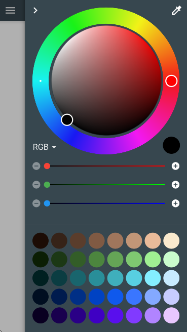
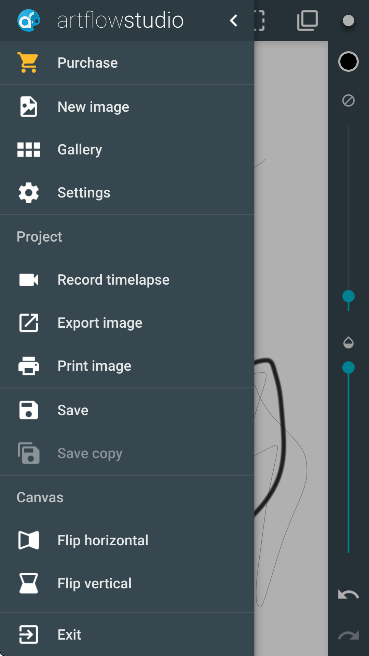

ArtFlow 这几年在忙什么——从一个画板到 GPU 引擎的进化史
从最早的简单速写板到现在主打 GPU 加速的专业级绘画应用，ArtFlow 的迭代节奏里藏着移动绘画工具的取舍逻辑。
现状：它现在是什么样子
如果你今天去 ArtFlow官网 或 Google Play 搜索，或者从官方下载拿安装包，打开第一眼看到的是一个近乎全屏的画布——侧边悬浮着工具抽屉，左上角是主菜单，右上角是图层面板。画笔在屏幕上移动的那一瞬间你就能感觉到：笔触没有延迟，跟手程度接近纸笔。
这是 ArtFlow 最新版给人的第一印象。但让我真正停下来细看的不是流畅的笔触，而是它画完一张 A4 尺寸插画后，图层面板里还躺着的那 20 多个层——每一层的合成和渲染都没有掉帧。
这种体验不是从第一天就有的。三年前我第一次装 ArtFlow 的时候，它还只是个能在手机上画速写的小工具。图层限制、撤销步数、画笔种类，处处透露着"够用就行"的产品哲学。

来路：几个关键转折点
样本文档里没有给出精确的版本号时间线，但从现有功能的分层可以反推几个阶段。
第一阶段：画板起步
早期版本的 ArtFlow 定位非常明确——手机上的速写板。免费版的 3 层限制就是这个思路的残留：线稿层 + 分色层 + 光影层，刚好覆盖一张速写的完整流程，再多就是给"认真画画"的人准备的了。撤销历史 6 步、画笔 20 个，都是同样的逻辑——速写不需要无限撤销，也不需要一百种画笔，够用就行。
这个阶段的核心卖点可能是"手机上最好用的免费画板"。没广告、不用注册、装了就能画——在一堆带强制广告和弹窗的同类型应用里，这个简洁度本身就是竞争力。
第二阶段：Pro 版与 GPU 引擎同步出现
我不确定 ArtFlow 的 Pro 版和 GPU 引擎是不是在同一个版本引入的，但从产品逻辑上看，它们几乎应该是同时发生的。
为什么？因为 GPU 引擎是一个重投入——Shader 编写、画布分块渲染、多层合成优化，这些工程量远不止是"加几个画笔"。团队愿意砸这个量级的开发资源，一定是瞄准了"专业级绘画工具"这个更大的市场，而不是继续在免费速写板里挤。
GPU 引擎带来的变化是根本性的。之前用 CPU 逐像素算笔刷颜色的方式，在高分辨率画布上必然卡。ArtFlow 把笔刷渲染、颜色混合、图层合成全部交给 GPU 的着色器去跑，CPU 只干 UI 和文件读写——这个架构决策让它从"手机画板"跨到了"平板专业绘画工具"的门槛。
Pro 版的功能设计也紧扣这个定位转变：50 层、无限制撤销、100+ 画笔、自定义画笔、PSD 导出——每一项都是在说"你可以在 ArtFlow 里完成一整张插画，然后无缝衔接到桌面端继续"。一次性买断 2.99 到 4.99 美元的定价也很克制，没有按订阅收费。

第三阶段：免费版与 Pro 版的边界固化
从样本文档里的免费版限制可以看出，团队在某个版本后把免费版和 Pro 版的功能边界给固化了。免费版维持着 3 层、6 步撤销、20 画笔的限制不变，但也没有进一步砍功能——对称工具的单轴模式、基础滤镜、基础画布尺寸，这些都还在免费版里。Pro 版则在持续堆积新功能：涂抹工具、渐变填充、对称工具多轴模式、调色板导入导出。
这个策略很聪明。免费版保持着"不干扰、够用"的底线，给速写用户一个安心的选择；Pro 版的解锁内容刚好卡在"认真做插画"的那个临界点——3 层不够用的人会自然流向 50 层，不能导出 PSD 的人会被跨软件协作的需求推一把。
规律：他们一直在死磕什么
从迭代节奏看，Artflow Studio 这个团队的优先级非常清晰。
死磕性能：GPU 引擎是他们最核心的投入。后来翻了ArtFlow文档才弄明白引擎原理——Shader 计算、帧缓冲写入、60fps 目标、画布分块渲染、多图层合成优化。这不是"刚好能用"的水平，是"专门写了一篇技术文档来解释"的水平。对于一个主要靠 Google Play 内购变现的独立团队来说，花这么多精力在底层引擎上而不是去堆 UI 花活，说明性能体验是他们真正的护城河。
不碰的东西：订阅收费。在这个行业里订阅几乎是标配，但 ArtFlow 坚持一次性买断。Pro 版通过 Google Play 应用内购买，绑定 Google 账号，换设备直接恢复。从用户口碑来看，这个决策让很多人愿意掏钱——20 多块换 50 层、PSD 导出、无限制撤销，性价比够直观。
也没怎么碰的东西：社区和素材市场。ArtFlow 没有内置素材商城、没有用户作品社区、没有云同步功能。你画完就导出，自己存。对于一个主打专业创作的工具来说，这其实是个挺独特的选择——很多竞品靠社区留用户，ArtFlow 则靠纯粹的工具力。
预判：照这个路线，下一步大概率什么走向
从迭代规律推，我觉得接下来几个版本可能会往这几个方向走。
一个是 Pro 版的功能密度会继续增加，但免费版的边界不会动。免费版保持"速写够用"的定位，Pro 版持续承接"专业创作"的溢出需求——这个分层已经跑通了，没理由改。
另一个是 GPU 引擎的扩展。现在它只服务于绘制，未来可能往实时预览和更复杂的滤镜效果上推。样本文档里提到画布温度管理和显存优化，说明团队也在关注设备端的性能瓶颈，而这些限制随着硬件更新会逐步放宽。
还有一个不太确定的可能：多平台扩展。样本文档里没有提到 iOS 版本，但既然 GPU 引擎的架构已经跑通了，往其他平台适配的门槛其实比从 0 建要低。不过这个要看团队规模和资源情况。
当然这些都只是从现有迭代节奏推的，不当官方口径传。
一点补充
样本文档没提的早期历史部分，恰恰说明了这个产品的成长路径非常集中——从"解决手机上画画卡"这个单点痛点出发，把 GPU 引擎做透，然后围绕这个核心往专业方向扩。没有中间路线，没有花架子，每一步都在夯实"移动端也能画出桌面级流畅度"这件事。
我觉得这是 ArtFlow 最值得看的地方：它不是那种快速迭代堆功能的产品，而是找准了一个技术突破口——移动端绘画的延迟问题——然后持续深耕下去。三年时间，从画板到专业工具，中间没有走过弯路。
对于想在手机和平板上认真画画的人来说，ArtFlow 值得花点时间试用。免费版的速写功能足够好用，Pro 版的解锁也划算。它不一定能完全替代桌面端的 Photoshop 或 Clip Studio，但在移动创作这个场景里，它的 GPU 引擎确实是目前最好的选择之一。
整理这套资料的时候我顺手在三个仓库都留了备份——GitHub 是主力源，国内访问 Gitee 或 GitCode 更顺畅。